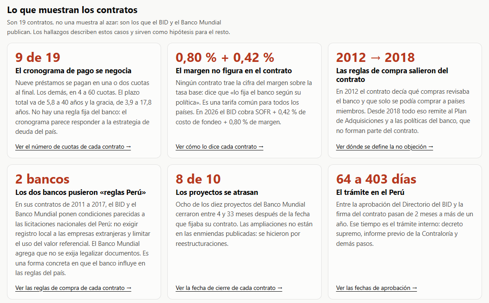

Gestión pública · Deuda y financiamiento · Análisis de documentos
Préstamos multilaterales al Perú: contratos, plazos y simulador

Pregunta
¿Cómo se fijan en la práctica la tasa, la gracia, el plazo y las reglas de compra de los préstamos del BID y del Banco Mundial al Perú, y cuánto se atrasan los proyectos?
Resultado
19 contratos leídos con las mismas 67 preguntas, con 944 citas verificadas. Nueve se pagan en una o dos cuotas al final. El margen nunca figura en el contrato: «lo fija el banco según su política». Ocho de diez proyectos del Banco Mundial cerraron entre 4 y 33 meses después de lo previsto.
Qué hice
Un sitio que explica cómo funcionan los préstamos de la banca multilateral al Perú leyendo los contratos mismos, no sus resúmenes. Parte de una tabla de 206 operaciones de endeudamiento (2011-2026) armada con los decretos supremos del MEF y las bases de los bancos.
- Seis hallazgos con cifras, cada uno enlazado a las respuestas de los contratos que lo sustentan.
- Un simulador que muestra en el tiempo el desembolso, la gracia y el pago de un préstamo, con 7 contratos reales o con supuestos propios. Con los cronogramas reales reproduce la vida promedio que dicen los contratos.
- Un explorador con las 1 273 respuestas: un contrato completo o una pregunta comparada entre los 19 contratos, con cita, página y enlace al documento oficial.
- El flujo de trabajo dibujado al estilo n8n, con sus 20 pasos, controles y decisiones.
Cómo se hizo
Adapté el método de «How China Lends» (Gelpern y otros, 2023): una misma ficha de preguntas para todos los contratos, con las condiciones generales de cada banco como plantilla y la lectura concentrada en lo negociado. Los contratos se convirtieron a texto con pdftotext y los leyeron agentes de IA, con doble lectura independiente en un piloto y en el 20 % de cada tanda. El acuerdo de fondo fue de 94 % a 98 %. Cada desacuerdo se resolvió como una regla de la ficha, con mi decisión. Un script en Python comprueba que cada cita esté en su página, y las fechas se contrastaron con los datos abiertos del BID y la API del Banco Mundial. El sitio está hecho en HTML, sin librerías, junto con Claude Code.
Limitaciones
- No es una muestra al azar: solo el BID y el Banco Mundial publican sus contratos. La CAF, el KfW y JICA no los publican.
- La verificación comprueba que cada cita exista, no la interpretación jurídica de la cláusula.
- Las reglas de compra y el margen viven en documentos que no forman parte del contrato (planes de adquisiciones y políticas del banco).
- Faltan 13 préstamos de inversión del Banco Mundial de 2017 a 2026 y 5 contratos escaneados que requieren OCR.
Créditos
Los contratos, los decretos supremos y las bases de datos son públicos. El crédito por esos documentos es del BID, del Banco Mundial y del MEF; el sitio cita fragmentos breves y enlaza a cada fuente oficial.
- Gelpern, A., Horn, S., Morris, S., Parks, B. y Trebesch, C. (2023). «How China Lends: A Rare Look into 100 Debt Contracts with Foreign Governments». Economic Policy.
- BID, datos abiertos. Banco Mundial, documentos y reportes y API de proyectos.
- Humphrey, C. (2014). «The politics of loan pricing in multilateral development banks». Review of International Political Economy.